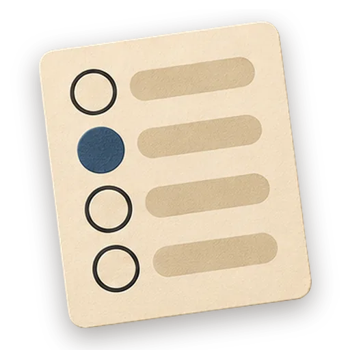

Interactive Quiz Widget

Run this in GezelNothing opened? Opening from this site needs the latest Gezel. Get Gezel
Build a single-file interactive quiz or assessment — multiple-choice, true/false, or a scored personality quiz — that asks questions one at a time, tracks the score, gives feedback, and shows a results screen. Authors the question bank, answer keys, and scoring logic first, designs the question and results UI, then implements stateful question flow with correct scoring. Quizzes break when the score is miscounted or the results screen never appears, so the content phase locks the answer key and the score-to-result mapping before any markup.
How it runs
| # | Step | Who runs it | What happens |
|---|---|---|---|
| 1 | Content | Planner | question bank, answer keys, scoring + results |
| 2 | Design | Designer | question card, option states, results layout |
| 3 | Build | Developer | implement index.html with question flow + scoring |
| 4 | Evaluate | Reviewer | Grade the deliverable against every acceptance criterion. All pass → finish; any fail → loop back and fix the gap. |
| 5 | Finish | Developer | All acceptance criteria met. Stamp a short summary and report DONE. |
Say something like "quiz app" or "make a quiz" or "trivia game" or "assessment widget" or "personality quiz" or "multiple choice quiz" in chat to start it.